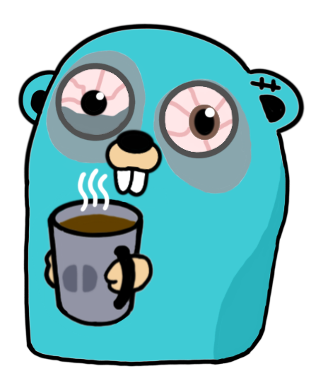

Go 基础知识 [部分转载] |
|---|
| 注：这些文章内容的一些部分是转载自 Go 语言圣经 (中文版)，并加上了本人在使用过程中的一些自己的理解和经验，最终整理成可读性更高的网页形式。在此向原作者和译者表示感谢，他们给社区提供了很棒的 Golang 入门参考。 原作者：Alan A. A. Donovan · Brian W. Kernighan 译者：柴树杉，Github @chai2010，Twitter @chaishushan 译者：Xargin, https://github.com/cch123 译者：CrazySssst 译者：foreversmart njutree@gmail.com |
|
Chapter 1: Golang 程序结构
描述了 Golang 语言程序的基本元素结构、变量、新类型定义、包和文件、以及作用域等概念； |
|
Chapter 2: Golang 基础数据类型
讨论了数字、布尔值、字符串和常量，并演示了如何显示和处理 Unicode 字符； |
|
Chapter 3: Golang 复合类型
描述了复合类型，从简单的数组、字典、切片到动态列表； |
|
Chapter 4: Golang 函数
涵盖了函数，并讨论了错误处理、panic 和 recover ，还有 defer 语句； |
|
Chapter 5: Golang 方法
介绍了 Golang 的方法； |
|
Chapter 6: Golang 接口
介绍了 Golang 的 Interface 机制； |
|
Chapter 7: Golang 并发编程
介绍了 Golang 的基于 goroutines 和 channel 的并发编程机制； |
|
Chapter 8: Golang 基于共享变量的并发编程
讨论了传统的基于共享变量的并发编程； |
|
Chapter 9: Golang Package 【未完成】
讨论了 Golang 的包机制和包的组织结构； |
|
Chapter 10: Golang 单元测试
讨论了单元测试，测试库提供了一些基本构件，必要时可以用来构建复杂的测试构件； |
|
Chapter 11: Golang 反射机制 【未开始】
讨论了 Golang 的反射机制，一种程序在运行期间审视自己的能力； |
Go Standard Library |
|---|
| 📌 PIN: Golang 标准库官方文档 |
| 📌 PIN:《Go语言标准库》The Golang Standard Library by Example |
|
1. Golang I/O 标准库
介绍了 Golang 标准库中涉及 I/O 的库内容 |
|
2. Golang 网络标准库
介绍了 Golang 标准库中涉及网络的库内容，如 net, net/http, net/url 等 |
|
3. Golang Context 标准库
介绍了 Golang 标准库中关于 Context 的内容 |
Go Third-Party Library |
|---|
|
1. package gin
|